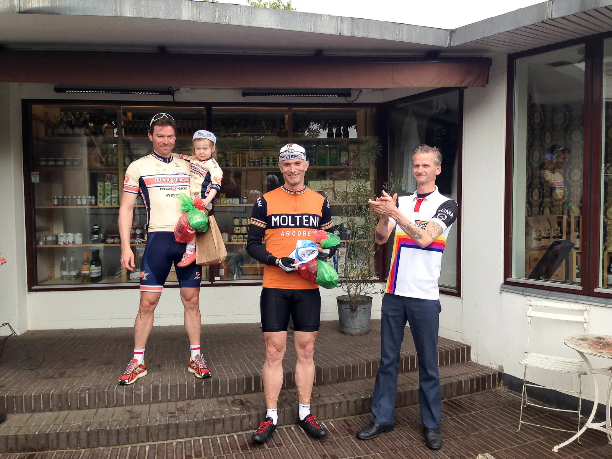
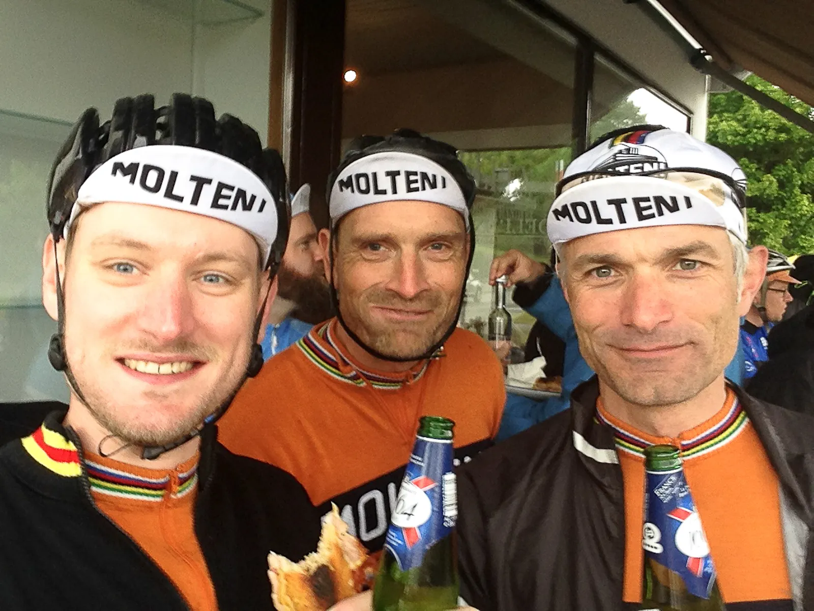
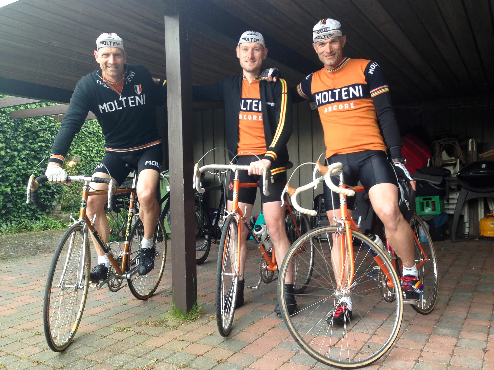
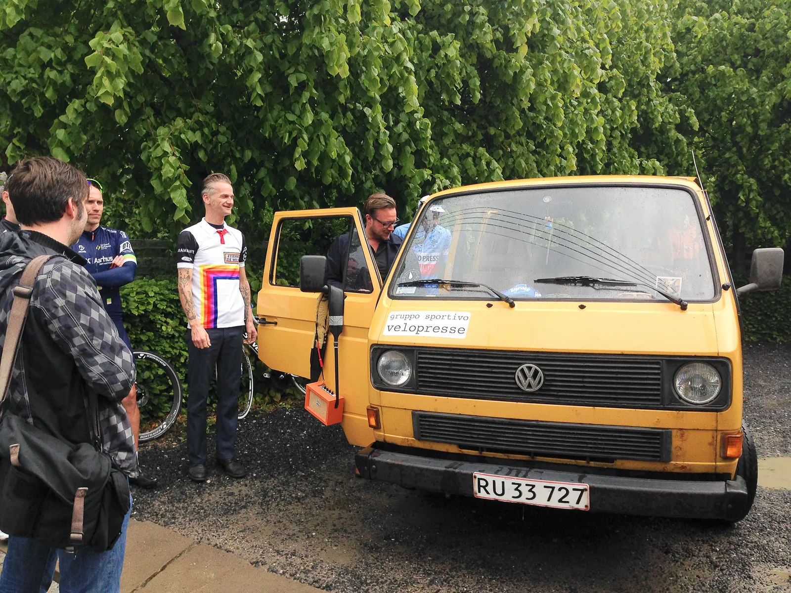
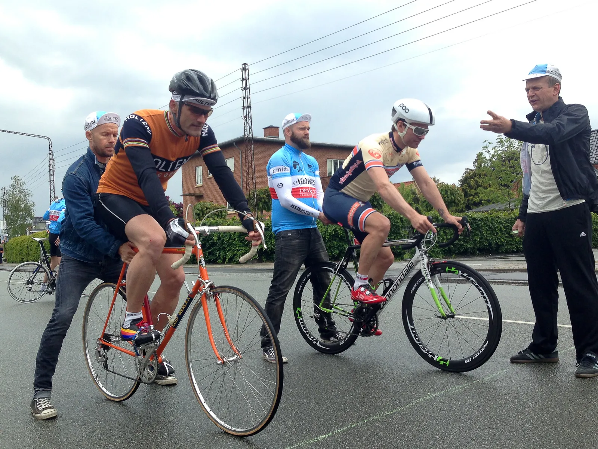
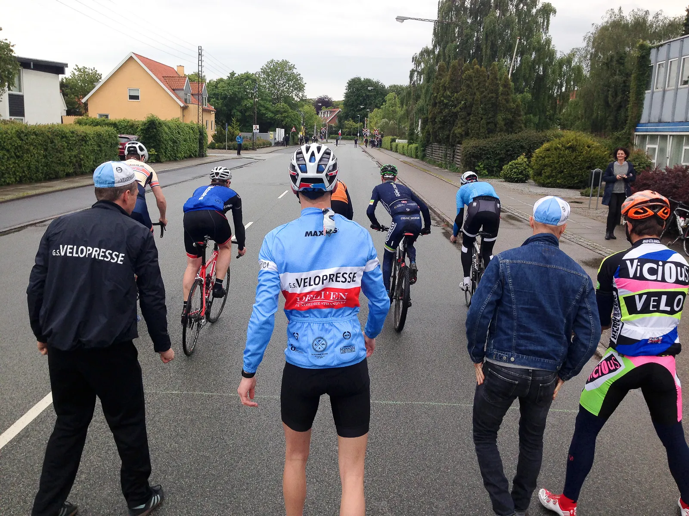
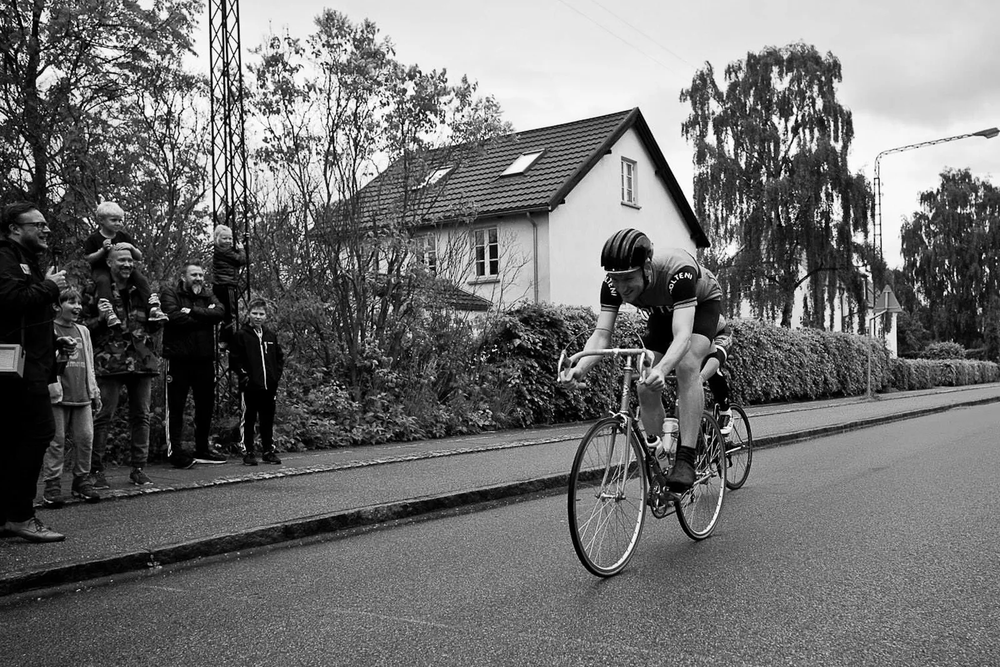
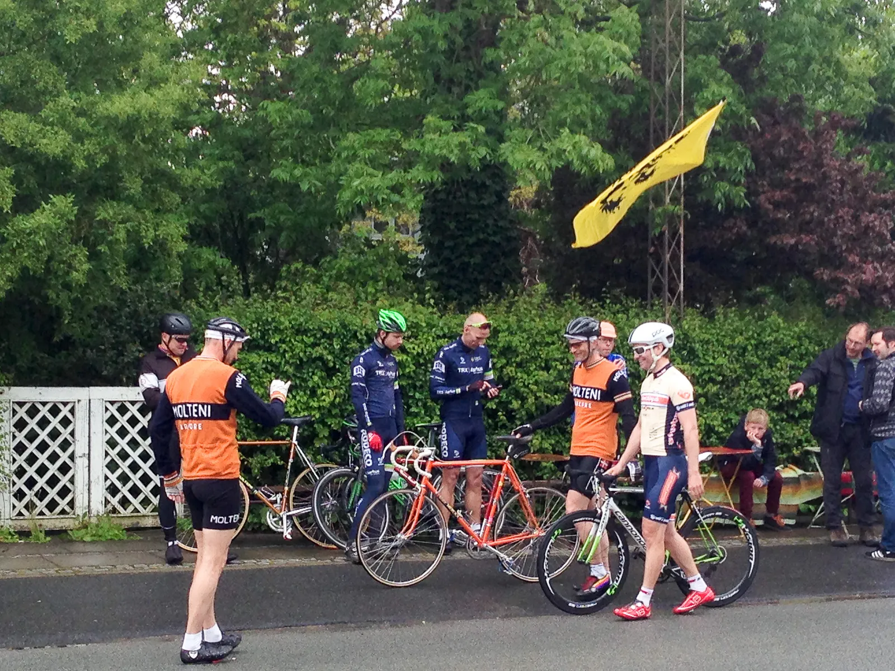
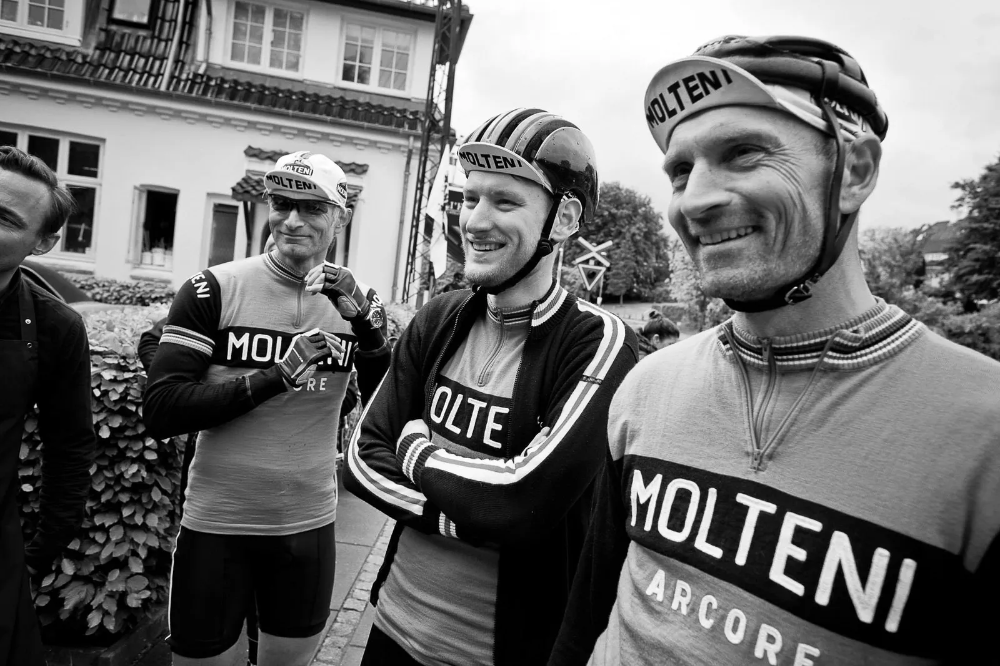

2. plads ved G.S.V Deli Sprinten i Aarhus

Med en flot 2. plads viste Grane Maaløe ekstrem styrke og hurtighed G.S. Velopress’ Deli Sprinten 2015.
Grane vandt suverænt både sin indledende match og semifinalen. I finalen blev Grane, Squadra Motenis Mr. Watt, slået af Altomcykling.dks topsprinter Uggi Kaldan med ringbredde.

Men efter topplaceringer ved linjeløb, baneløb og senest også holdløb, blev det besluttet i Squadra Moltenis holdledelse, at stille et hold til G.S. Velopresse Deli Sprinten 2015.
Hvad er G.S.V Deli Sprinten?
Et sprintstævne, hvor der køres 100 m sprint med dødsstart via elimineringsheat arrangeret af de hårde herre fra Gruppo Sportivo Velopresse.
Squadra Molteni stillede op med med holdkaptajn Niels Bjørnsteen, løjtnant Kasper Sørensen og supersprinter Grane Maaløe.

Niels og Grane havde stadig sidste uges hårde holdløb i benene og Kasper havde både bjergtræningslejr i Alsace samt Aarhus Rundt dunkende i lårene – så der vi på forhånd ikke forventninger om topplaceringer.
Og dog …
Squadra Molteni stiller altid op for at vinde – og når de gamle cirkusheste lugter savsmuld, så går der lettere bersærk.
Opvarmning og knæ-gearskift
Squadra Molteni mødte op i godt tid – og besluttede at rulle en 40 minutters tid inden starten på Deli Sprinten 2015.
Det blev dog kun til små 10 minutter, hvor 100 m sprint med dødsstart og diverse gearskifteteknikker blev testet på en stille villavej i det nordlige Aarhus.
Men knap som bagdækkene var blevet varme af et par 2000 W dødsstarter – begyndte det at øs-pisse ned – og Squadra Molteni måtte søge læ under en carport – et meget ynkeligt syn.
Heldigvis var der tale om en klassisk 15 minutters-junibyge.

Målområdet til Deli Sprinten 2015 var ud for Deli’en på Nordre Strandvej.
G.S. Velopresse er rigtig cykelstil
Et hyggeligt setup var etableret: G.S. Velopresse’s teambus, en lækker Classic 1970’er Dodge Charger, borde og stole, Flandern- og italiensk flag var linet op – og ikke mindst Deli’en.

En super lækker, anderledes, smagfuld og hyggelig Deli.
Starten gik efter lodtrækning samt skarp og skrap introduktion ved Il Dottre og Kaptajn Kickxen.
Squadra Moltenis supersprinter Grane Maaløe var første mand i ilden – og i sit første heat udraderede han sin modstander.
Næste var Niels Bjørnsteen, der blev slået med en cykellængde.
Kasper Sørensen var tredje – og her vandt han på listig vis duellen.






Afgørelsen af Deli Sprinten
Efter en kort pause blev det til en 3. plads til Niels i opsamlingsfinalen – og Kasper blev slået ud i semifinalen.
Men supersprinter Grane vandt overlegen anden semifinale.
Finalen blev en gentagelse af den indledende sprint – nemlig Grane Maaløe mod Uggi Kaldran.

Her kom Uggi bedre fra start, men med Grane lige i haserne.
Men op af den 100 meter lange sprintstrækning havde Uggi den ekstra power (og gear) – og vandt med noget der kunne ligne en halv ringbredde …
Hygge, øl og præmier
Efter de hårde og udmattende sprint-matcher var der vand, øl og hygge ved Deli’en – og naturligvis præmieoverrækkelser med Deli-ejeren som kyssemand.

G.S. Velopresse Deli Sprinten 2015 – et fantastisk koncept. God arrangement, sjov stemning – og cykelsprint, når det både er for sjov og alvor.
G.S. Velopresse Deli Sprinten 2015 får 5 stjerner herfra.